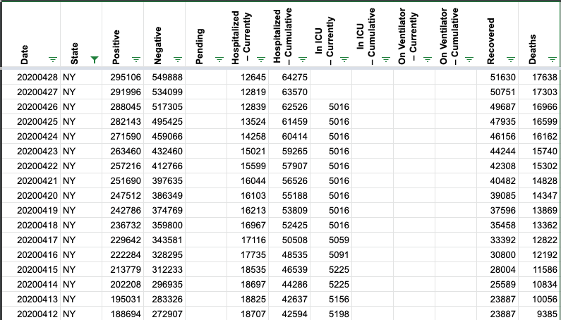

URGENT: Very unusual jump in number of recovered patients on 4/28
Issue number 323
ppasquar opened this issue on April 28, 2020 at 5:22 pm
Today (4/28), the national data release reported an increase in recovered patients by more than 40,000 units (from 94,745 to 139,299), after prior changes of no more than a few thousands.
This is either the result of data entry error or the result of a sudden update in the recoveries after days of stale information. Either way, can you please clarify, as this number is crucial to compute Active cases in any reasonable prediction model?
Thanks!
Paolo
Comments
Thank you!
Will you implement your fix soon and retroactively? If not, I may have to interpolate the data points.
Paolo
Paolo Pasquariello Professor of Finance Stephen M. Ross School of Business University of Michigan 701 Tappan Street, room R4434 Ann Arbor, MI 48109-1234 email: ppasquar@umich.edu phone: 734-764-9286
webpage: http://webuser.bus.umich.edu/ppasquar/ SSRN research page: https://papers.ssrn.com/sol3/cf_dev/AbsByAuth.cfm?per_id=250093 http://ssrn.com/author=250093 Google Scholar page: https://scholar.google.com/citations?user=ByzWEGMAAAAJ&hl=en LinkedIn profile: https://www.linkedin.com/in/paolo-pasquariello-376247/
On Tue, Apr 28, 2020 at 7:06 PM Elliott Klug notifications@github.com wrote:
Hello,
The jump in recoveries is from NY. We resolved how to calculate a base line from the data they have been releasing. Unfortunately they stopped publishing a specific number and it took a while to come up with a reasonable solution.
Thanks!
— You are receiving this because you authored the thread. Reply to this email directly, view it on GitHub https://github.com/COVID19Tracking/issues/issues/323#issuecomment-620900684, or unsubscribe https://github.com/notifications/unsubscribe-auth/APKZPLXKFJXOIXJWFZB2Q3TRO5OQFANCNFSM4MTHCIUQ .
Hello,
I have backfilled the calculated data for NY:
Before
After 
Thank you!
Paolo
Paolo Pasquariello Professor of Finance Stephen M. Ross School of Business University of Michigan 701 Tappan Street, room R4434 Ann Arbor, MI 48109-1234 email: ppasquar@umich.edu phone: 734-764-9286
webpage: http://webuser.bus.umich.edu/ppasquar/ SSRN research page: https://papers.ssrn.com/sol3/cf_dev/AbsByAuth.cfm?per_id=250093 http://ssrn.com/author=250093 Google Scholar page: https://scholar.google.com/citations?user=ByzWEGMAAAAJ&hl=en LinkedIn profile: https://www.linkedin.com/in/paolo-pasquariello-376247/
On Wed, Apr 29, 2020 at 12:04 AM Elliott Klug notifications@github.com wrote:
Hello,
I have backfilled the calculated data for NY:
Before [image: Screen Shot 2020-04-28 at 11 43 11 PM] <…/assets/images/github/43073915/80559822-e2c28300-89ac-11ea-9549-c817772ca2fc.png>
After [image: Screen Shot 2020-04-29 at 12 02 03 AM] <…/assets/images/github/43073915/80559830-ea822780-89ac-11ea-8a17-1b7d09f590f8.png>
— You are receiving this because you authored the thread. Reply to this email directly, view it on GitHub https://github.com/COVID19Tracking/issues/issues/323#issuecomment-620977702, or unsubscribe https://github.com/notifications/unsubscribe-auth/APKZPLT5P4A72JQO7LQ75UDRO6RMHANCNFSM4MTHCIUQ .
Hello,
The jump in recoveries is from NY. We resolved how to calculate a base line from the data they have been releasing. Unfortunately they stopped publishing a specific number and it took a while to come up with a reasonable solution.
Thanks!